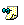

Job Scheduler
Description
This form describes the steps required to configure the scheduling of a task.
A task is a predefined model you can take as a starting point to define a task or group task. A task really is a LN4 code command that contains a set of parameters that do not have any defined values. Once you have assigned values to the parameters, the task becomes a task in box. The purpose of tasks is to reduce the time required to create the box tasks.
The Job Scheduler avoids having to repeat certain tasks. Use this tool to define a series of tasks to be run in batch, at a specific time or when a series of time-related conditions are met.
Use Job Scheduler to manage all processes related to creating and maintaining batch tasks.
Actions
Use this screen to enter a new task in the system or to edit the information related to another task that is part of it.
To do so, use the procedures and follow the recommendations below:
- Click New to schedule a new task or filter for the ID or name of the task, box, or execution user to edit a previously scheduled task. You can also filter by status:
- Completed: groups all boxes that have run their scheduled executions. In other words, it lists the boxes without a status of Waiting, Executing, Cancelling, or Aborting.
- Started groups all boxes that have partially started their executions, but that have not yet finished all of them. It considers executions that have not been run to be those with the status: Waiting, Executing, Cancelling, or Aborting.
- Not Started: groups all boxes that have not yet started. Specifically, it shows boxes whose execution status is Waiting.
- Select the required Time Rules options; that is, indicate the time rules that determine when the box is run:
- Immediate, it is run as soon as possible.
- Cyclical, in which case you must enter a start date from which the box will be run at regular intervals, and set the number of times that the box will be run, which, in cyclical mode, can never exceed 500. For this option:
- Set the number of times the box is executed. The content of the Until option is updated according to the number of executions you specify.
- Until: if you select this option, instead of specifying a number of executions, you specify the date and time until which the box will be executed. The number of times the box can be executed changes according to the start date and the frequency you previously specified.
- Dates List: you can create a list of dates on which the box is to be executed. Set the date and time of the execution. There is a text box in which you enter the dates. To manage it, use the Add, Delete Selected, and Delete All buttons. The dates you enter must be later than the current date.
- Time Zone ID: in this drop-down box, you select the time zone to determine the start time of the box execution.
- Expire after: group box where you define the expiry period for each execution process. Once this period has expired the box no longer runs. The time is indicated in minutes.
- Enter the following optional information:
- Description of the box to clarify its purpose.
- If you are working in a multicompany environment, the company in which the tasks will run.
- Click the links or use the navigation buttons on this page to complete the configuration. This way you can enter information related to:
- Advanced Options. More information: Defining the advanced options.
- Parameters. More information: Setting the schedule parameters.
- Executions. More information: Viewing the status of the executions.
Click  . Complete the required Task Box and Task ID fields
with the name and ID of the task.
. Complete the required Task Box and Task ID fields
with the name and ID of the task.
|
 Agroup box is a series of tasks in box that are run sequentially. When you define a box, you assign a name, an identifier, a description, and parameters to it. Next you assign values to these parameters. You specify the list of tasks in box, as well as the expected run date that is determined by the time rules you set. |
Once you have selected the run mode, complete the following required information to finish defining the time rules:
|
When you select the company, you can choose to execute the box as single company. If not single company, you can select more than one at a time and as many boxes as companies that you select are generated. |